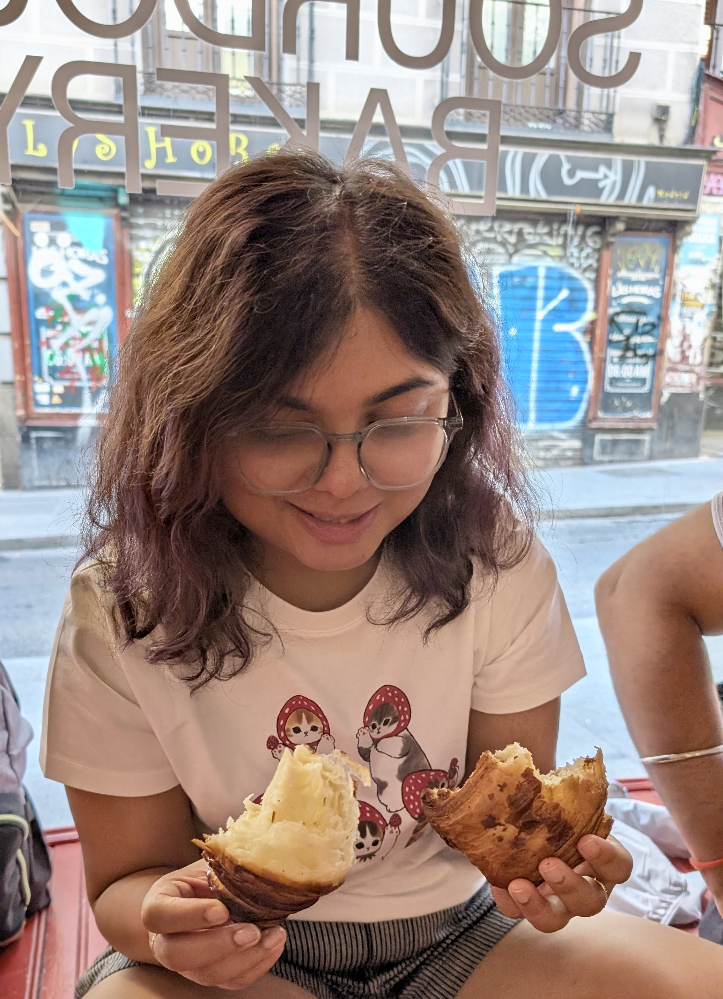
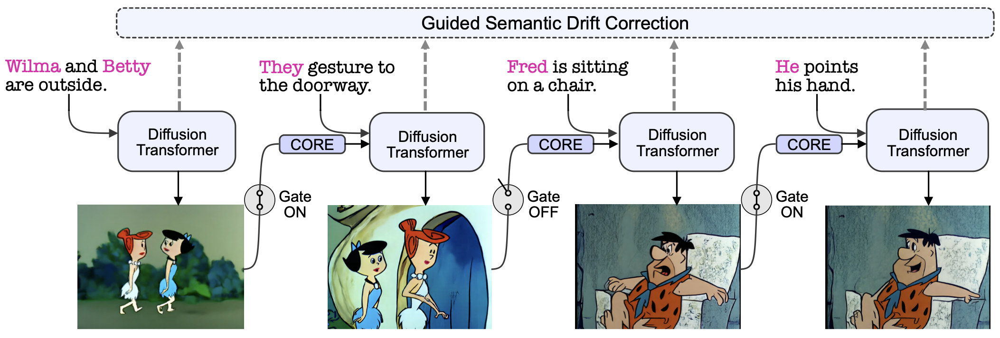
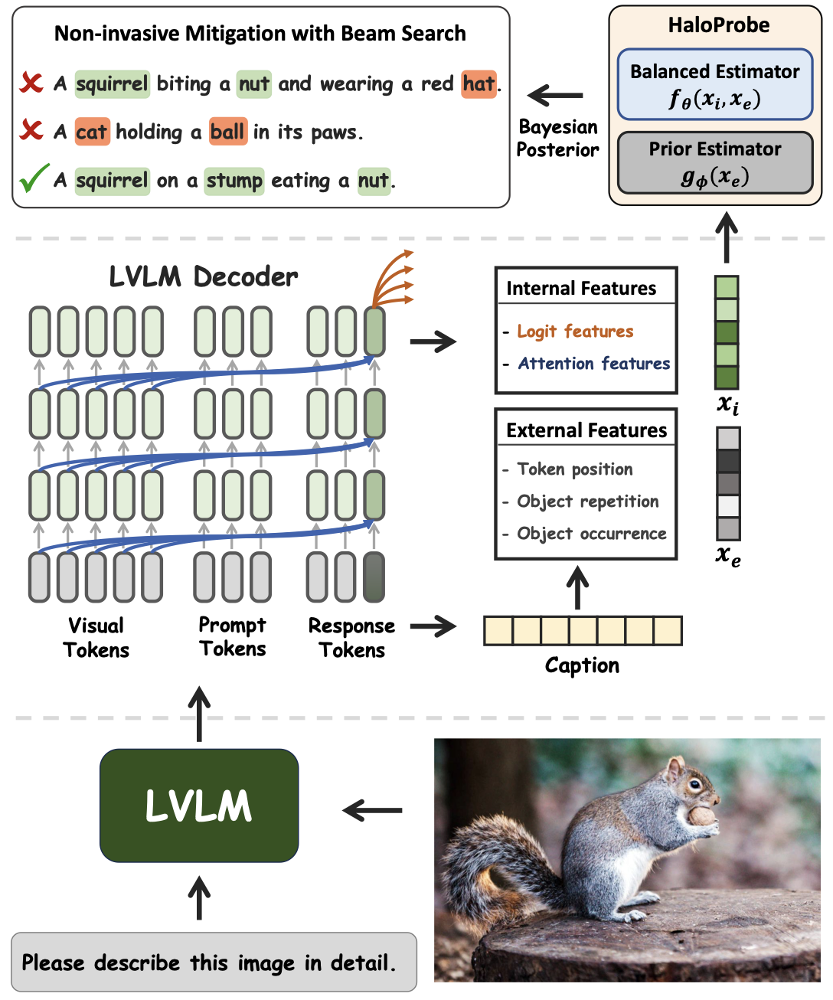
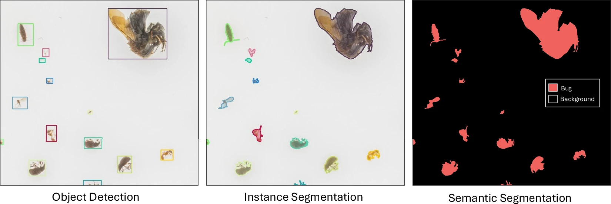
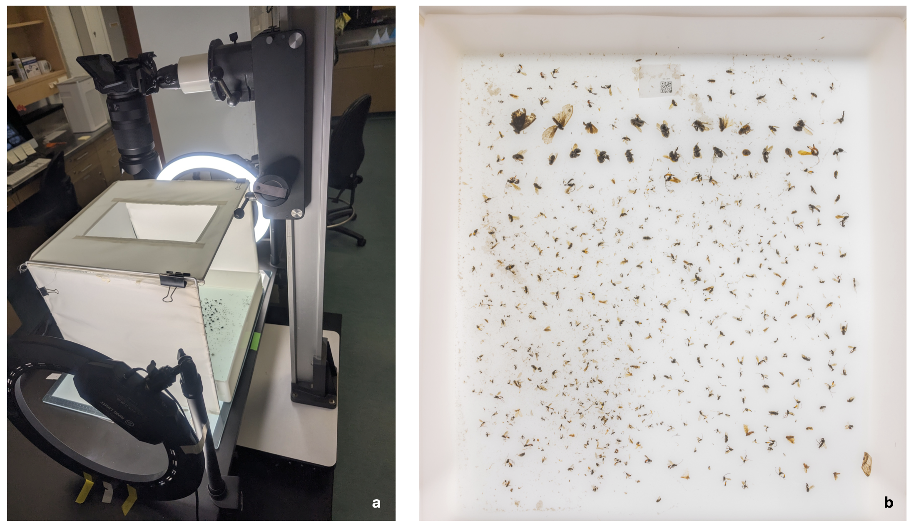
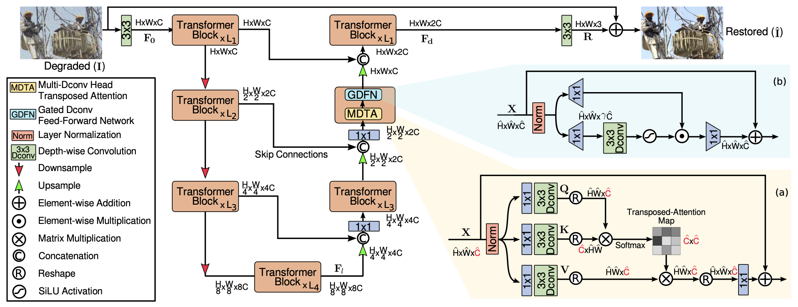

|
Akshita Gupta
I am an ELLIS PhD student at TU Darmstadt, co-supervised
by Prof. Marcus Rohrbach and
Dr. Federico Tombari at
Google Zurich.
I completed my MASc at the University of Guelph, where I was advised by
Prof. Graham Taylor.
During that time, I was also a student researcher at the
Vector Institute.
I was fortunate to spend time as a research intern at
Apple under
Dr. Tatiana Likhomanenko,
Microsoft under
Gaurav Mittal and
Mei Chen,
Vector Institute under
Dr. David Emerson,
and as a scientist in residence at
NextAI with Prof. Graham Taylor.
Before academia, I worked as a Data Scientist at
Bayanat
,
where I focused on projects related to detection and segmentation.
Prior to that, I was a Research Engineer at the
Inception Institute of Artificial Intelligence (IIAI),
working with
Dr. Sanath Narayan,
Dr. Salman Khan, and
Dr. Fahad Shahbaz Khan.
Email
Google Scholar
Twitter
|

☕ ask me for world's best coffee list
|
2026
2024-2025
2022-2024
2022-2024
2023-2024
2024
2022
2018-2022
What's New ✨
| [Jun 2026] | 🚀 Started as a Student Researcher at Google Zurich with Dr. Yongqian Xian and Dr. Federico Tombari. |
| [May 2026] | 🌟 Co-organizing WICV at ECCV 2026 as lead organizer. |
| [Mar 2025] | 🎓 Excited to be an ELLIS PhD student at TU Darmstadt under Prof. Marcus Rohrbach and Dr. Federico Tombari (Google Zurich) 🎉 |
| [Oct 2024] | 🎓 Graduated and Defended my Masters Thesis |
| [Jun 2024] | 🍏 Joined Apple as a Research Intern! |
| [May 2024] | 🧠 Serving as a Scientist-in-Residence at NextAI. |
| [Jan 2024] | 🏆 Our paper Long-Short-range Adapter for Scaling End-to-End Temporal Action Localization accepted at WACV 2025 (Oral)! 🎤 |
| [Dec 2023] | 📚 Our work Open-Vocabulary Temporal Action Localization using Multimodal Guidance accepted at BMVC 2024! |
| [Jun 2023] | 🧪 Our paper Generative Multi-Label Zero-Shot Learning accepted at TPAMI 2023. |
| [Jun 2023] | 🚀 Started interning at Microsoft, ROAR team. |
| [Jan 2023] | 🤖 Interned at Vector Institute with AI Engineering team. |
| [Sep 2022] | 🔬 Joined Prof. Graham Taylor's Lab and Vector Institute. |
| [Mar 2022] | 🏅 OW-DETR accepted at CVPR 2022. |
| [Sep 2021] | ✍️ Reviewer for CVPR 2023, CVPR 2022, ECCV 2022, ICCV 2021, TPAMI. |
| [Jul 2021] | 🏅 BiAM accepted at ICCV 2021. |
| [Feb 2021] | ✍️ Serving as a reviewer for ML Reproducibility Challenge 2020. |
| [Jan 2021] | 📝 Paper out on arXiv: Generative Multi-Label Zero-Shot Learning |
| [Jul 2020] | 🏅 TF-VAEGAN accepted at ECCV 2020. |
| [Aug 2019] | 🛰️ A Large-scale Instance Segmentation Dataset for Aerial Images (iSAID) available for download. |
| [Aug 2018] | 🎤 One paper accepted at Interspeech, CHiME Workshop 2018. |
| [May 2018] | 🌟 Selected as an Outreachy intern with Mozilla. |
Publications 📄
2026
|

|
ReCap: Lightweight Referential Grounding for Coherent Story Visualization
Aditya Arora,
Akshita Gupta,
Pau Rodriguez,
Marcus Rohrbach
Under Review
|
|

|
HaloProbe: Bayesian Detection and Mitigation of Object Hallucinations in Vision-Language Models
Reihaneh Zohrabi,
Hosein Hasani,
Akshita Gupta,
Mahdieh Soleymani Baghshah,
Anna Rohrbach,
Marcus Rohrbach
ICML 2026
|
|

|
A Multi-Modal Dataset for Insect Biodiversity with Imagery and DNA at the Trap and Individual Level
John Quinto,
Johanna Orsholm,
Brendan Furneaux,
Tommi Mononen,
Tomas Roslin,
Iuliia Zarubiieva,
Akshita Gupta,
Scott C. Lowe,
Graham W. Taylor
Nature Scientific Data 2026 NeurIPS 2025 Workshop on Imageomics ORAL
|
2025
|

|
BugSR: Improving Tiny Instance Segmentation on the MassID45 Dataset
John Quinto,
Scott C. Lowe,
Akshita Gupta,
Johanna Orsholm,
Prajakta Darade,
Iuliia Zarubiieva,
Brendan Furneaux,
Tommi Mononen,
Tomas Roslin,
Graham W. Taylor
NeurIPS 2025 Workshop on Imageomics
|
|

|
RestormerL - Efficient Real-World Deblurring using Single Images: AIM 2025 Challenge Report
Aditya Arora,
Akshita Gupta,
Anna Rohrbach,
Marcus Rohrbach
AIM 2025 Challenge Report Runner-up Challenge Award
|
2024
2023
2022
2021
2020
2019
2018
I borrowed this website layout from here!
|
|
{kind=link}